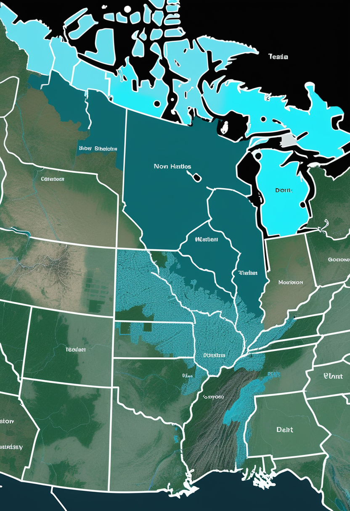
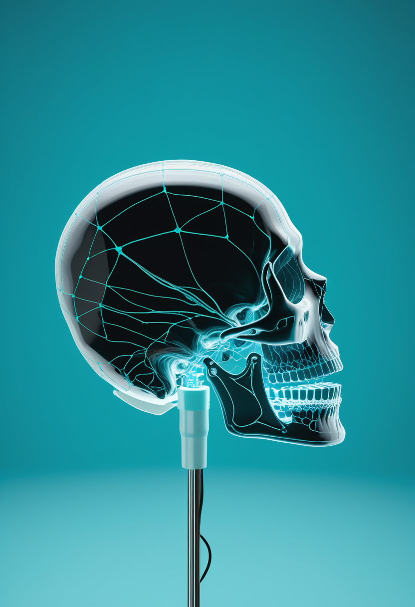
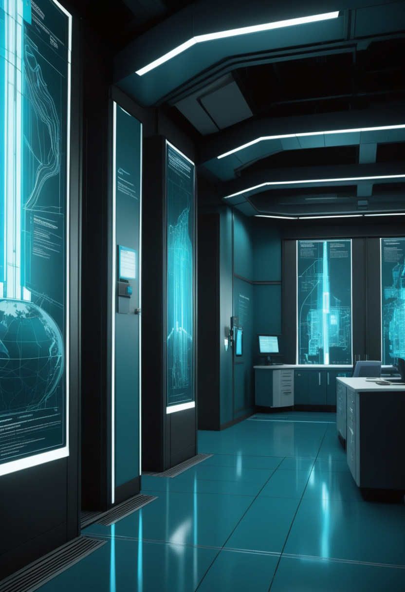
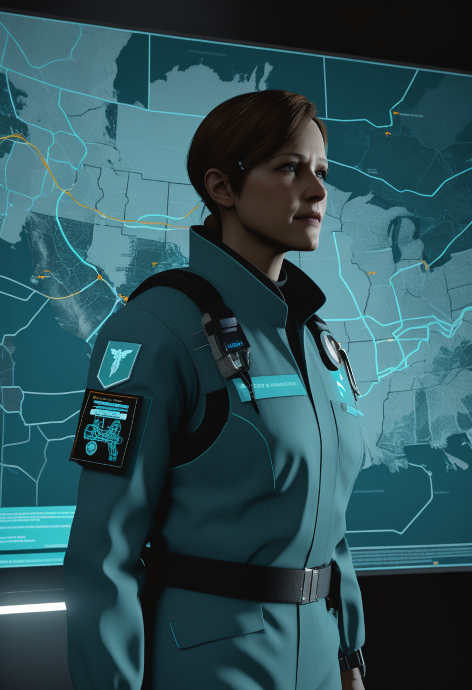
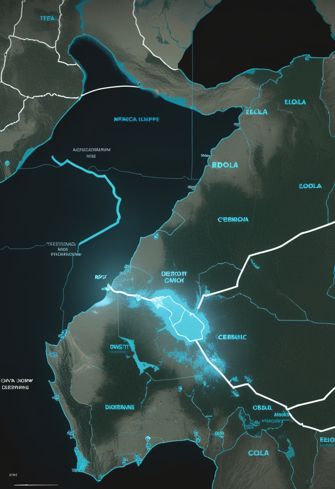
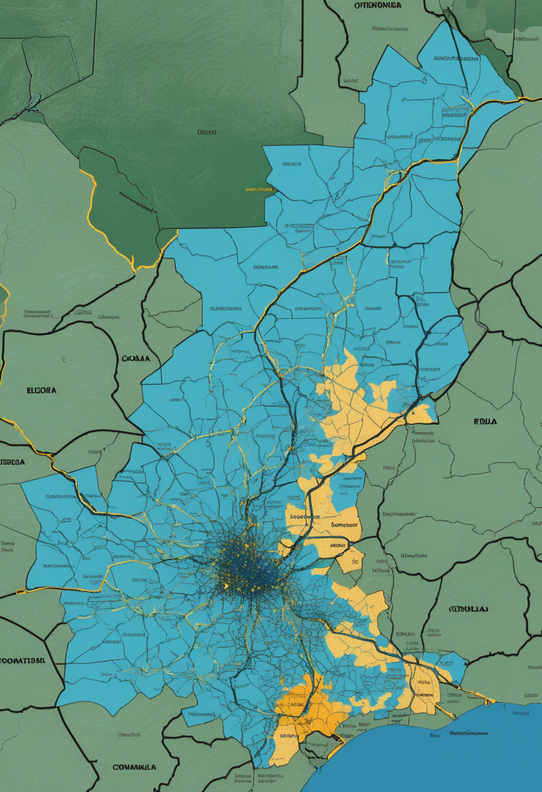
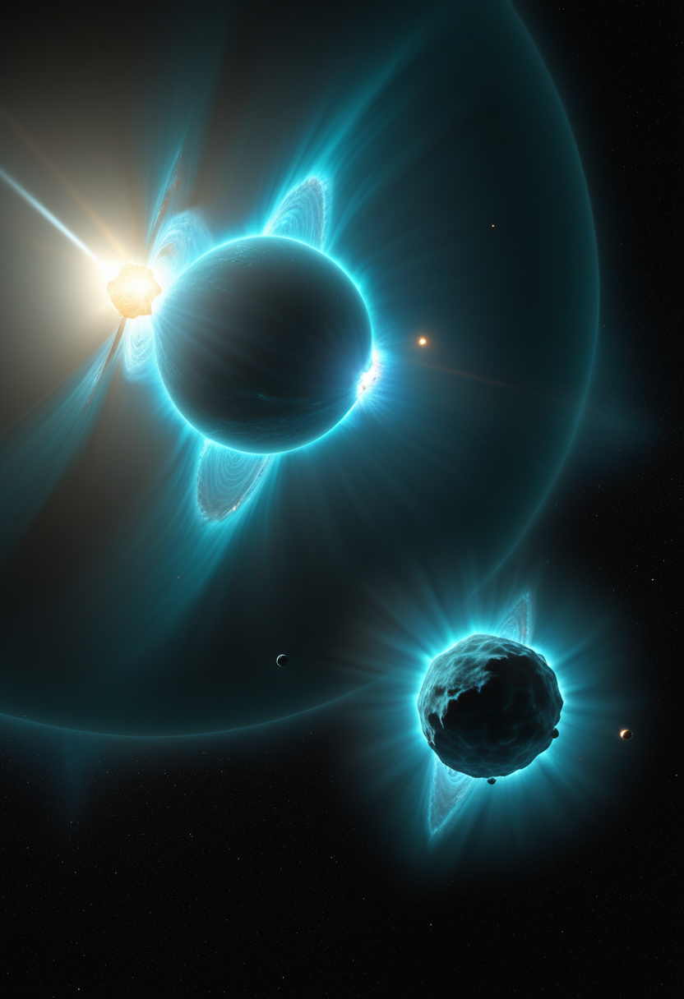
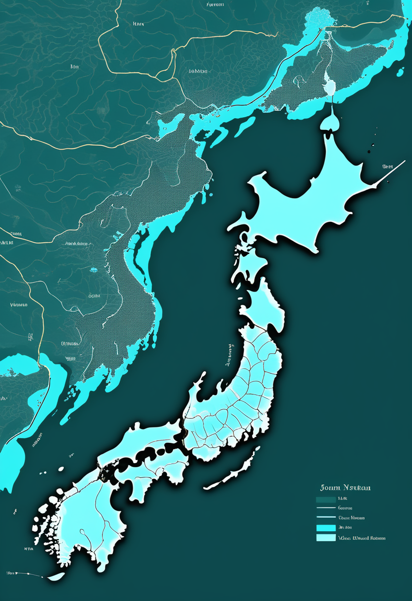
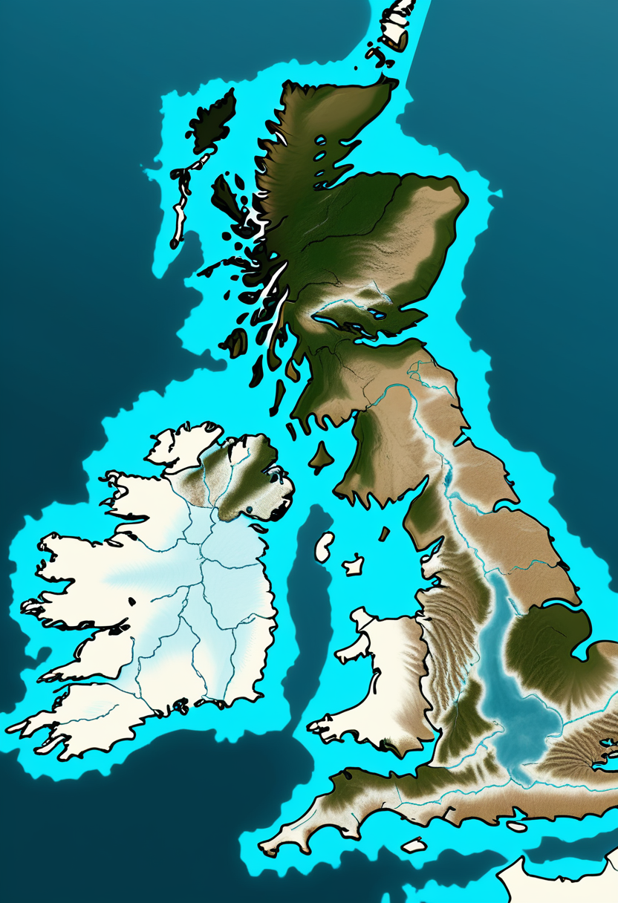

6月11日、Nature Astronomyが掲載したJWST観測データが、恒星に潮汐ロックされた超高温ガス惑星WASP-121 bの夜明けと夕暮れで大気組成と温度が劇的に異なることを初確認した。1,750℃超の昼夜格差に加えて「朝と晩の非対称性」という第三の次元が宇宙気象学に加わった日に、GenentechはエムグロバルトをSMAから静かに撤退させ、Precision NeuroscienceはFDA承認の1024電極で低侵襲BCIの新基準を刻み、DRCはmpoxの国内緊急事態終了を宣言した。3,200人のゲノムが日本人の第三の起源を浮かび上がらせ、AIが意識を持つかは「永遠に分からないかもしれない」と科学者が言う水曜日 ── 異なる最前線で、今日も前進は続く。
恒星にいつも同じ面を向ける「潮汐ロック」状態のWASP-121 bは、昼面平均約2,770 K・夜面約1,000 Kという極端な温度差を持つ超高温ガス惑星だ。2026年6月、マックスプランク天文学研究所のCyril Gapp氏らはJWSTを使い、惑星が恒星前を通過するタイミングを複数観測することで「夜明けの終端部（朝）」と「夕暮れの終端部（晩）」の大気を独立して分析することに初めて成功した。夕暮れ側は朝側よりCO吸収が強くH₂O吸収がわずかに弱く、より高温だった。昼面の熱を夕暮れ方向に偏って運ぶジェット気流の非対称性が「朝と晩の違い」を作り出しているとチームは解釈する。「昼と夜」に続く第三の次元を系外惑星気象学に加えたこの成果は、惑星大気の精密測定におけるJWSTの新たな能力を示すものとしてNature Astronomyに掲載された。
2026年3月20日、Genentech/Rocheはエムグロバルト（GYM329、抗ミオスタチン抗体）のSMA開発中止を発表した。MANATEE Phase 2/3試験（259名、2〜10歳の歩行可能SMA患者）のPart 1結果で、リスジプラム単独療法と比較して筋肉成長・運動機能の一貫した改善が見られなかった。安全性は良好で重篤有害事象による離脱はゼロだったが、有効性の壁を超えられなかった。同社はFSHD（顔面肩甲上腕型筋ジストロフィー）開発も終了しつつ、肥満領域では継続中。この撤退によりミオスタチン阻害アプローチのSMA開発はScholar Rockのアピテグロマブ（PDUFA 9月30日）一本に絞られた形となり、競合不在でアピテグロマブの市場環境は改善している。

2026年ScienceDirect掲載のSMA高度治療アップデートレビューは、新生児スクリーニング（NBS）の普及が発症前治療介入を可能にし、SMAの転帰を劇的に改善することを改めて示した。日本では47都道府県のうち38都道府県で任意NBSが実施済みだが、対象新生児はいまだ約20%のみ。政府は全国化に向けた補足予算申請を行っており、2026年内の制度整備が注視されている。早期検出は「運動神経が残っている段階での介入」を可能にし、治療の有効性を最大化するための最も費用対効果の高い施策とされている。Roche GYM329の撤退が示したように、既に機能を失った神経・筋肉への後追い介入には限界があり、「生まれた瞬間から始める」スクリーニング網の拡充が治療戦略の要となっている。
2026年、Springer NatureのDiscover Neuroscienceに掲載された最新レビューは、SMA治療の進化の方向性を整理した。既存のヌシネルセン・リスジプラム・Zolgensmaに代表する「SMN標的」アプローチに加え、ミオスタチン阻害・神経筋接合部増強・遺伝子編集・エクソンスキッピング最適化という「SMN非依存戦略」が次世代を形成しつつある。エムグロバルトのMANATEE失敗は「ミオスタチン阻害は有望だが特定の患者層・投与設計では期待通りに出ない」という複雑さを示し、複合アプローチのデザイン精緻化の必要性を浮かび上がらせた。「どの機序をいつ組み合わせるか」という個別化戦略が次の課題だ。
エムグロバルトの撤退がアピテグロマブへの集約を生み、新生児スクリーニングの全国化が早期介入の要として焦点になる中、SMA治療は今、SMN補充を超える多機序複合戦略の設計へと入っている。

Precision NeuroscienceのLayer 7 Cortical Interfaceが米国FDAの510(k)クリアランスを取得した。髪の毛より薄い柔軟フィルムに1,024個の白金電極を埋め込んだアレイは、開頭手術なしに頭蓋骨の微細スリットから脳表面に沿わせて設置できる。最長30日間の留置が承認されており、ベス・イスラエル・ディーコネス医療センター等3施設で計37名の臨床研究参加者への実績がある。リアルタイムの音声デコードとカーソル制御が実証済みで、Neuralinkの深部電極型・Synchronの静脈内留置型と並ぶ「皮質表面非侵襲型」として、BCI三者競合の輪郭が一段明確になった。

Neurotech Newsletter 2026年レビューは、BCIが「ほとんどが学術的なアーティファクト」だった段階を抜け「実行の問題」に移行したと総括する。Neuralink・Paradromics・Blackrock Neurotechが高帯域幅移植型を商業化に押し進め、Precision NeuroscienceとSynchronが異なる規制カテゴリを開拓している。一方で長期安定性・感染リスク・信号劣化・倫理的合意形成という課題は依然として解決されていない。「実装の時代」は「研究が終わった」を意味せず、加速の裏側に重量のある未解決問題が同行しているとの分析が示されている。
BCIの急速な普及と並行して、脳波・神経信号データのプライバシー問題が倫理的最前線に浮上している。「ニューロタイピング（neural typing）」── 無意識の思考傾向・感情状態・意図の読み出し ── が神経インターフェースを通じて可能になる未来への警戒が研究者やジャーナリストの間で高まっている。既存の個人情報保護法は神経データを想定して設計されていないため立法の空白が生じており、EU AI法や米国の州法レベルでの議論が始まったばかりの段階にとどまる。BCIが「障害のある人を解放する技術」として広がるほど、その実装が神経プライバシーの空白に踏み込む構造的リスクが増大する。
Layer 7が「開頭不要の1024電極」でBCIの解像度を塗り替え、業界全体が「実装の時代」に入る一方、思考データのプライバシーという法整備が追いつかない課題が同行している。

6月14日時点のDRCエボラ確定例782例・死者181名は引き続き続いている。国境なき医師団（MSF）は現地報告で、イトゥリ州の20保健ゾーンでの医療従事者への感染リスクと治療施設数の絶対的不足を警告した。ブンディブギョ型向けの承認ワクチンも特異的治療薬も存在しない中、WHOのPHEICが継続している。米国が2.2億ドルの支援を表明し、Africa CDCが協調対応を続けているが、武装勢力地帯でのアクセス制限と接触追跡率50%以下が依然として封じ込めの最大障壁だ。「最前線を守る人を守る」体制の脆弱さが、今週の現場からの声となっている。

2026年4月2日、コンゴ民主共和国政府はmpoxの国内公衆衛生緊急事態終了を正式に宣言した。2024年初〜2026年2週目の期間に8万件超の検体が分析され、3万4千例超の確定例と2,200名超の死者が記録されたアウトブレイクの「制御到達」として評価された。保健相は「ウイルスを根絶したのではなく、流行を制御した」と強調し、サーベイランスと対応準備の継続を明言した。Africa CDCも1月に大陸レベルのPHECS（大陸公衆衛生緊急事態）解除を宣言しており、アフリカの二つのmpox非常事態が段階的に解除された形となる。ただしエボラPHEICは継続中で、複合危機の重心はエボラ対応に移っている。

DRCでは約4万4,800件のコレラ感染が20州で報告されており、UNICEFは「過去25年で最悪の流行」と位置づけている。汚染水と脆弱な衛生設備を介した感染で子どもへのリスクが最大で、エボラへの国際的資源集中が並行するコレラ対応を圧迫する構造が続く。mpox国内緊急事態終了により重心がエボラとコレラの二大危機に移った形で、WHO「One Response」計画がこの二疾患への統合対応を続けている。コレラは抗生物質と経口補水塩で対応可能な疾患だが、衛生インフラの根本的脆弱性という構造的課題なくしては封じ込めに至らない。
mpox国内緊急事態が終了し重心がエボラとコレラに移る中、782例のエボラは封じ込めに至らず、4万件超のコレラは子どもに集中している。WHOの統合対応が直面する試練はまだ続く。
恒星に潮汐ロックされたWASP-121 b（昼面約2,770 K・夜面約1,000 K）では、これまで「昼と夜の温度差」しか分かっていなかった。2026年6月にNature Astronomyに掲載されたMPIA/Gapp氏らの研究は、JWSTが惑星の夜明け側終端部と夕暮れ側終端部を独立観測できることを初実証した。夕暮れ側は朝側よりCO吸収が強くH₂O吸収がわずかに弱く、かつ高温 ── 昼面の熱を夕暮れ方向に偏って運ぶジェット気流の非対称性が原因だ。「昼と夜」に続く「朝と晩」という第三の次元を系外惑星気象学に加えた発見として、太陽系外大気研究の解像度が一段上がった。

高速電波バースト（FRB）の多くが一回きりなのに対し、繰り返し起こるFRBの起源は長年の謎だった。中国のFAST（500m口径電波望遠鏡）を用いた約20か月の連続観測が、地球から約25億光年離れた繰り返しFRBについて「RMフレア」── 電波偏光の急激な変化 ── を捉えた。これは伴星からのコロナ質量放出プラズマがFRB源近傍を通過することで生じると解釈され、磁星と伴星からなる連星系がこのFRBの起源であることを強く示唆する。FRBが単一の起源ではなく複数のメカニズムを持つ可能性も示されており、宇宙電波天文学における重要な一歩となった。
2027年運用開始予定のNASAナンシー・グレース・ローマン宇宙望遠鏡が、銀河バルジに向けた重力マイクロレンズ調査で約10万個の系外惑星を新たに発見する可能性があると研究者が予測している。JWSTの精密分光とESA Euclid Q2（6月24日公開予定）の広域サーベイと相補的に機能し、太陽系外惑星の統計的分布を初めて網羅的に把握することが期待される。これは従来のミッション全てを合計した発見数をはるかに上回る数字で、「系外惑星の存在証明」から「分布・形成・大気の統計学」へのパラダイム転換を担う次世代観測機となる。
WASP-121 bが惑星の「朝と晩」を分けて見せ、FASTが25億光年先のFRBに連星系の証拠を見つけ、Romanが10万個の系外惑星を予告する ── 今週の宇宙科学は、解像度の新しい段を一気に上がった。

2026年5月14日に報告された研究は、3,200名超の日本全国ゲノムデータを解析し、「縄文人＋弥生人」の二重起源説を書き換えた。現代日本人には縄文人（約13%）・弥生人（約16%）に加えて、北東アジア大陸から渡ってきたとみられる第三の集団（約71%）が存在し、3〜7世紀の古墳時代に対応する大陸渡来集団として「エミシ」との関連が示唆される。沖縄では縄文人比率が28.5%と最高で、西日本では13.4%と低く漢民族との遺伝的近縁が高い ── 列島の遺伝的多様性の新しい地図が描かれた。二重起源として描かれていた日本人の系統論が三重へと更新される、古代ゲノム研究の転換点となる発見だ。

2026年5月13日に報告された古代DNA解析は、ブリテン島への人類の再入植が科学者たちが想定していたよりも早い時期に起こっていた可能性を示した。最終氷期の後、氷床が後退し始めてほどなく人類がブリテン島に戻っていたという証拠が浮かんだ。地理的・気候的バリアが溶けると同時に人類がいかに素早く新しい土地を開拓するかを示す事例として、欧州の人類移動史の空白を埋める発見となった。日本の第三祖先集団の発見と合わせて、「人類はどこから来てどこへ向かったか」という問いに、2026年5月は二つの新しい章を加えた。
2026年5月、研究者声明とNeuron誌分析は、AIの意識を科学的に検証する方法論が現時点では存在しないとの見解を示した。Cambridge哲学者は「不可知論が唯一の擁護可能な立場で、その不確実性は永久に続くかもしれない」と論じる。AI意識・倫理シンポジウム「AICE-26」（サセックス大学、2026年7月1〜2日）は「道徳的地位を持ちうるシステムを生み出してしまう可能性」を主題とする。「意識ではなく感受性（sentience）こそが倫理的分岐点」との見解も浮上しており、人間のデジタル化・脳双子の臨床化と並行して「AIの内的世界」への問いが広がっている。人類が道具を使うほどに、道具が問いを返してくる。
3,200人のゲノムが日本人の「第三の起源」を浮かび上がらせ、ブリテン島への再入植が想定より早かったと古代DNAが語り、AIが意識を持つかは「永遠に分からないかもしれない」と科学者は言う ── 過去と未来が今の問いと繋がる章だ。
今日の世界は、WASP-121 bの「朝と晩の違い」を初めて測った日でもあった。25億光年先の繰り返し電波バーストに連星系の手がかりが見つかり、10万個の系外惑星がローマン宇宙望遠鏡の射程に入り、日本列島の第三の祖先集団が3,200人のゲノムから姿を現した。同じ水曜日に、DRCのmpoxが国内緊急事態の終了を宣言し、コレラは25年ぶりの最悪水準を続け、エボラは782例の重みを保ったまま月曜日から動いていない。SMAの治療競争で一つの候補薬が静かに退き、1024電極のBCIが脳の表面に沿い、AIが意識を持つかどうかについて科学者は「わからないかもしれない」と言い始めた。
明日への短い便り。今日も世界は、問いながら回っていました。おやすみなさい。